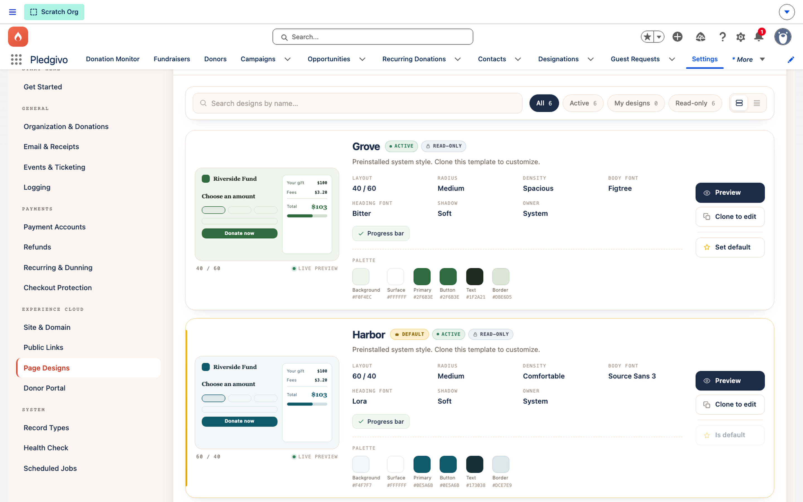
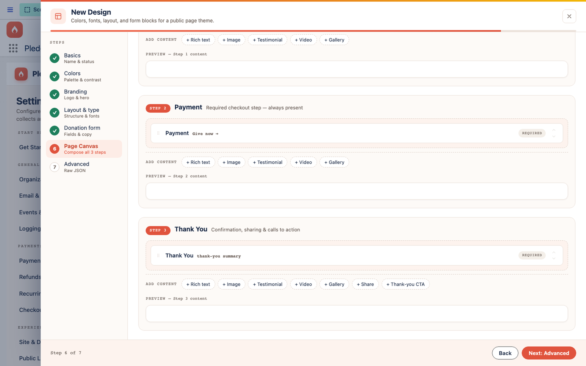
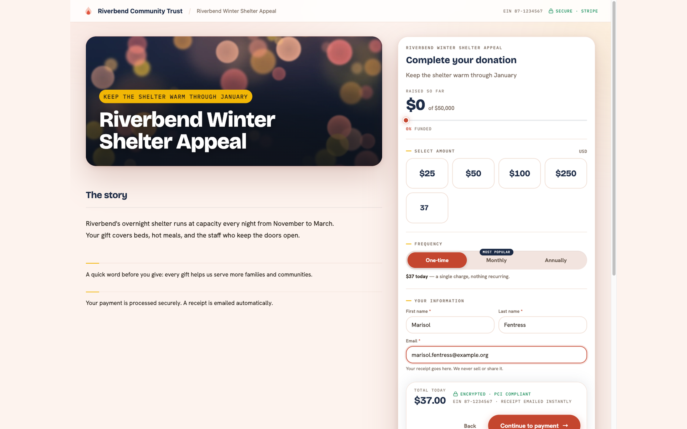
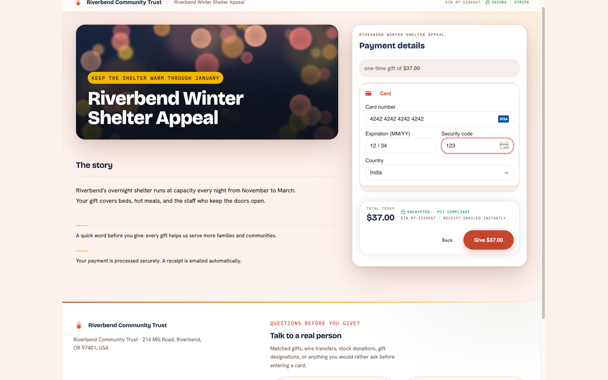
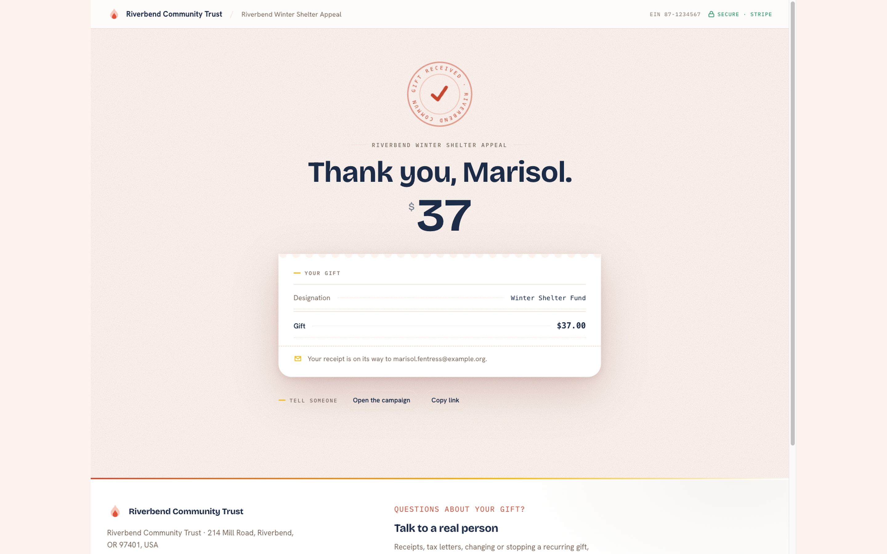
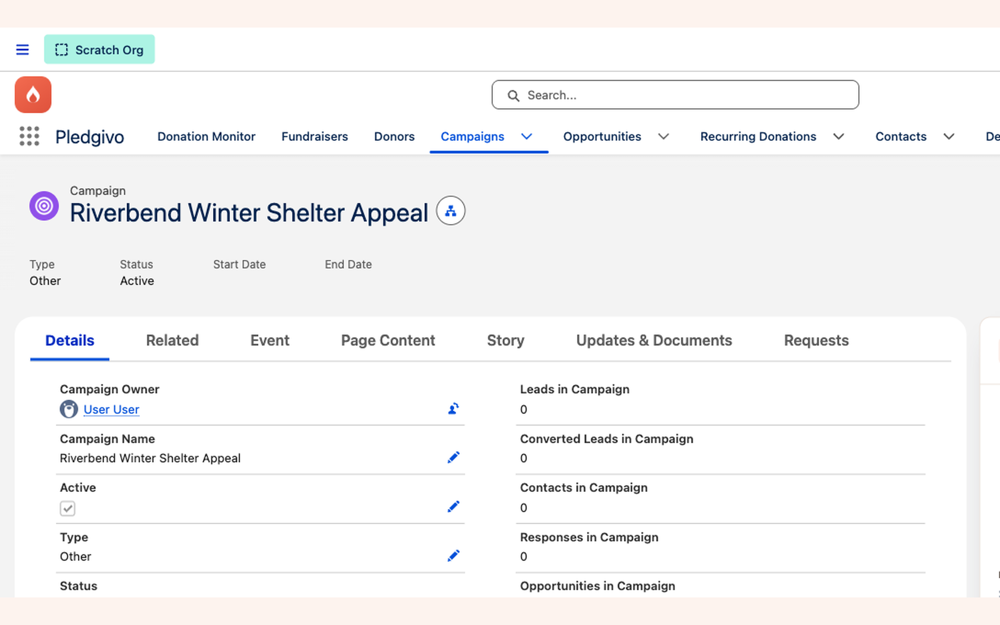

Guides
Set up your first campaign#
A walkthrough from creating a Campaign to a live, public donation page — covering the Page Canvas composer, designations, and publishing.
This assumes the package is installed, a Payment Account is connected, and you have the
Fundraising_Admin permission set. See Installation and
Connecting Stripe if you haven't done those yet.
Watch it first#
What it is. A three-and-a-half-minute narrated run through everything below and the embed guide that follows it — the campaign record, the donation page a donor actually sees, a real Stripe test payment, and the same campaign running on an external website. It is built from the screenshots on these two pages rather than screen-recorded, so every screen holds for as long as its narration takes and nothing moves faster than you can read. Captions are in the player's subtitles menu; the chapter list jumps straight to a section.
1. Create the Campaign#
Create a standard Salesforce Campaign — any Type. Give it a name donors will recognize; it appears on the public page and in receipt emails.
2. Route it to a Payment Account#
Point the campaign at the Stripe account its donations should settle to, using the Payment
account picker on the Fundraisers console wizard's Goal & fund step (it writes the
Campaign's Payment_Account__c lookup). A campaign settles to exactly one account, so this is
a single choice, not a list — if your org has only one connected account, every campaign picks
the same one.
The wizard won't let you past that step without a payment account: a campaign with no route for its money would take donations it can't settle.
3. Write the story#
The wizard's Story step — step 2, right after Type & basics — is where you write the narrative donors read on the public page. It has a toolbar for headings, emphasis, lists, pull quotes, images and video, and a live preview that renders the story with the same component the public page uses.
Images and videos are links to files you host elsewhere; the app stores neither. See Write a campaign story for the full format, the https-only rule for images, and what playing a video on the page (rather than linking out to YouTube) requires.
A campaign with no story is fine — the section simply does not render.
4. (Optional) Add designations#
If donors should be able to direct their gift to a specific fund — "Where needed most,"
"Scholarship fund," and so on — create Designation__c records for the campaign. Skip this
step if every gift to this campaign goes to the same place.
Once you have funds, use the Fundraisers console to set the campaign's Designation mode: let donors pick from every active fund (the default), lock every gift to one fund with no picker shown, or scope the picker to a specific subset you choose. See Controlling which funds a donor can pick for what each mode looks like to a donor.
5. (Optional) Add custom questions and FAQs#
If you need to collect anything beyond name, email, and amount — a t-shirt size, a dedication note, how a donor heard about you — add it as a custom question. FAQs work the same way: they're content the donation page shows rather than something the donor answers.
Both are picked from a shared library of Content Templates, and you choose which of them this campaign uses from its Custom questions and FAQs cards (on the campaign's record page, or in the Fundraisers console). Questions you select become field blocks available in the Page Canvas.
FAQs need no Page Canvas work at all, and there is no way to leave them off by accident. Whichever FAQs you select here are shown to donors automatically, in a Questions section at the foot of the form column — below the donate button, on both the Compose and Payment steps, so they can never end up between a donor and the button they came to press. A small ? Questions link in the button bar jumps straight down to them. A campaign that selects no FAQs shows nothing: no empty heading, no placeholder.
The position is fixed and is not a Page Canvas block, so it is the same on every page design and there is nothing to configure. What you select on this card is exactly what a donor sees.
A template is shared, not a per-campaign copy
Every campaign that picks a question points at the same record. Editing the wording changes it on all of them at once — which is usually what you want for a typo, and rarely what you want when you're tailoring a question to one appeal. To reword it for one campaign, create a new template and swap that campaign onto it.
The template's own record page carries a Where This Is Used card listing every campaign referencing it, and which of those are showing it to donors right now. Read it before editing the wording — it is the blast radius.
The Active checkbox is not a kill switch either. It controls whether a template appears in the picker when you're adding one to a campaign; a campaign that has already selected it keeps showing it to donors after you untick the box. To take a question down, remove it from the campaigns using it — the card names them.
6. Attach a page design#
Open Settings → Experience Cloud → Page Designs and create (or reuse) a Campaign_Design__c
for this campaign. Start from one of the packaged themes — you can adjust colors and fonts
later without rebuilding the layout.

**What it shows.** The Page Designs panel — 10 packaged, read-only starting themes filterable by Active/My designs, each card showing its layout, button style, radius, density, font pairing, full color palette, and Preview / Clone-to-edit / Set default actions. "Bloom" is shown active here.
7. Compose the page in the Page Canvas#
The donation page is a three-step wizard — Compose → Payment → Thank You. You only compose the first and third; Payment is locked.
- Compose. Drag in the blocks this campaign needs, in the order you want donors to see them: amount/frequency, donor info, your designations (if any), custom questions, and any content blocks (a story, an image, a testimonial). FAQs are not a block — they render in their own fixed Questions section below the donate button (see step 5).
- Payment. The Stripe Payment Element itself is locked in place — it can't be removed or reordered — but its surrounding block is still editable (block label, section title, help text, submit button label), and you can add extra content blocks to this step.
- Thank You. Customize the confirmation message and optionally add a share prompt or a secondary call to action (e.g., "follow us" or a link to volunteer).
The Thank You step's copy doesn't reach donors yet
Since the confirmation moved to its own page at /thank-you (so that completed gifts produce a
countable pageview — see Donations & payments),
the custom headline, subtext and share-network choices you set in this step are not applied
to what the donor actually sees. The routed page ships its own greeting, impact line, receipt
and share block, so nothing is missing from the donor's experience — but your custom wording
isn't honoured there yet. The campaign's call-to-action link is carried through.

**What it shows.** The Compose step's block list with a drag handle on each block and an "Add block" control at the bottom.
8. Preview and publish#
Preview the page as a guest would see it before publishing. Once you're satisfied, publish — the campaign's public URL becomes live and accepts real donations against whichever Payment Account you routed it to in step 2.
Confirm you're on the right Payment Account before publishing
If you built and tested this campaign against a test-mode Payment Account, switch the campaign's Payment account to your live-mode account before sharing the URL publicly. Pledgivo doesn't warn you at publish time if a campaign is still pointed at test mode.
If the save is rejected#
Saving from the wizard's Publish step can still fail — a name over Salesforce's 80-character limit, a field your profile can't edit, a validation rule or trigger your org has added. When that happens the wizard stays open with everything you entered intact. A red panel appears directly above the Back/Create buttons explaining what went wrong, in plain language rather than the raw platform error, with one line per problem.
If the problem belongs to an earlier step, the panel offers a button that takes you straight there — "Go to Type & basics", for example — with your other answers preserved. Fix the field and press Create again. Nothing is saved until every problem is cleared, so a rejected save never leaves a half-built campaign behind.
9. Take a test donation before you share it#
Do not take the page's word for it. Open the public URL yourself, give the campaign a real
Stripe test-mode gift, and then confirm Salesforce wrote a donation record. The screens below are
that exact run against a freshly installed org — card 4242 4242 4242 4242, expiry 12/34, CVC
123, $100 one-time.



What they show. 1 — the composed page as a donor sees it: your story in the left column, the form on the right with the amount pills, the one-time/monthly/annually switch, the four collapsed optional sections, and a running TOTAL TODAY above the button. 2 — the payment step, where the Stripe Payment Element is the only place card details are ever typed; the amount is restated in the heading so nobody enters a card unsure what they are about to be charged. 3 — the confirmation page, which greets the donor by first name, states the amount, and says the receipt is on its way to the address they entered.
A thank-you page is not proof the gift was recorded
The donor sees that third screen the moment Stripe confirms the card. Salesforce creates the
Opportunity, the Contact and the receipt later, from a scheduled Apex job. If those jobs
are not running, the card is still charged, the donor still gets the thank-you page, and
nothing at all is written down — the gift sits as a Donation_Staging__c row and no alarm
fires, because the job that would raise the alarm is scheduled by the same one-shot that
schedules the finalizer.
This is exactly what happened on the fresh-install run these screenshots come from: a real $100 payment succeeded into an org with zero scheduled jobs. Nothing was lost — the next finalizer pass picked the row up and created the donation correctly — but for as long as the jobs were absent, every donation was invisible.
So check both ends. Before you share a link, confirm Settings → Get Started → Start the background jobs reads DONE. After a test gift, confirm the record actually exists: the Donation Monitor tab, or the campaign's Opportunities related list. See After you install.
If the finalizer is running, a gift takes a few minutes to appear. What you should end up with, from that one $100 test payment:
| Where | What you should find |
|---|---|
| Opportunity | "<Donor name> Gift", $100, Closed Won, on this campaign, Payment Status = Succeeded |
| Contact | Created from the name and email typed into the form, if that donor was new |
| Receipt | A numbered receipt record, and an email to the address on the gift |
| Donation Monitor | The staging row moved to Completed with the Opportunity linked |
| Campaign | Amount Raised and Donor Count up by the gift |
Refund the test gift afterwards if it was taken in live mode — see Process a refund.
10. Share it#
The public donation URL is available from Settings → Experience Cloud → Public Links — a read-only table of ready-to-share URLs (campaigns, donor portal, and more), each with a one-click Copy action. See Settings & integrations.
For an embeddable donate button or card for external websites, use the Campaign record's own Embed & Share panel instead — a mode toggle (Card/Form/Button), a ready-to-paste embed snippet, and a Preview live button that opens the real public page in a new tab. See Embed a donate button on your website for the full walkthrough, including the Site-panel settings that gate it.

What it shows. The live Give Now 2026 campaign used for the fresh-install run — Status Active, a start and end date, Default Designation General Fund, Payment Account Stripe (Test), and Design Marigold. Those last three lookups are the whole of the routing: designation decides where the money is booked, payment account decides which Stripe account it settles to, design decides what the public page looks like. Everything else on this layout — the Event Details block below, empty here — belongs to ticketed campaigns and stays blank on a donation campaign.
What a donor sees when the page can't load#
Shared links get mangled — an email client truncates a query string, a campaign is unpublished while a newsletter is still in flight, Salesforce has a bad minute. The public page handles all three itself; there is nothing to configure, but it's worth knowing what your donor is looking at when someone forwards you a screenshot.
Every one of these states carries your organisation name, logo and EIN across the top. That branding is read from Settings, separately from the campaign itself, so it renders even when the campaign can't — a donor who hits a broken link still lands somewhere recognisably yours rather than on a bare error page. The campaign's own colours and fonts are not applied here, because they arrive with the campaign record that failed to load; these screens use the package's default palette instead.
| What happened | What the donor sees |
|---|---|
| The page is still loading | Your branding bar, then a grey outline of the real page — hero, form column, sidebar — in the proportions the content will occupy, so it settles into place instead of jumping. A moving rail across the top distinguishes "still working" from "stuck". |
| The link has no campaign in it, or points at one that no longer resolves | "This link doesn't point to a campaign", with the suggestion that the address may have been shortened or cut off in an email, and a Back to our giving page button. Deliberately not styled as an error — nothing has gone wrong, the address is just incomplete. |
| The load genuinely failed | "We couldn't load this page", with a Try again button that re-runs the request in place, keeping the donor's URL intact. |
The failure message is intentionally vague
A donor gets one generic sentence, never the underlying platform error. Salesforce error text names internal objects, fields and record IDs, and this page is readable by anyone holding the link. The full detail is written to the package's log instead — check there, not the donor's screenshot, when you're diagnosing a report of this screen.
If a donor reports the "doesn't point to a campaign" screen from a link you sent, compare the
URL they received against the one in Settings → Experience Cloud → Public Links; the usual
cause is a ?slug= that got cut at a line break in an email.
Related#
-
Campaigns concept
What a Campaign gains from the package, and how theming works.
-
Publish a donor portal
Give returning donors self-service access to their giving.
-
Process a refund
What to do once real donations start coming in.